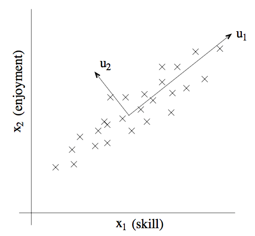
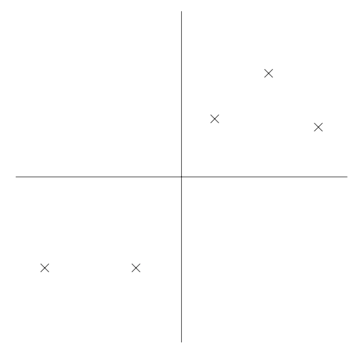
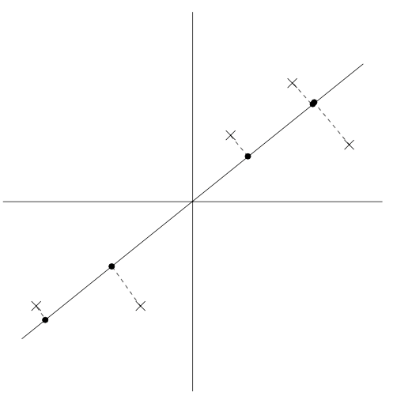
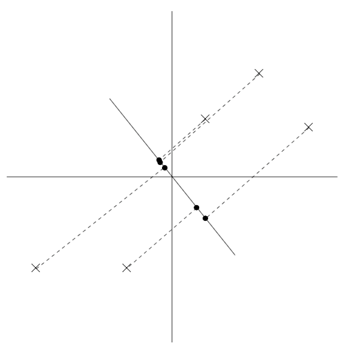

前言
cs229讲义 斯坦福大学的CS229课程是学习机器学习的必备之课，之前是由吴恩达主讲的课程，后来由于不明原因课程被斯坦福大学下架。
note10的主要内容：PCA
重新理解，加油~
PART XI 主成分分析
之前介绍了因子分析，用$k $ 维子空间对 $x\in \mathcal{R}^{n} $ 进行近似建模，有 $k ≪ n $。具体来说，已知点 $x{(i)} $ ，在 $k $ 维仿射空间$\{\Lambda z + \mu; z \in \mathcal{R}^{k}\} $ 中生成某个 $z^{(i)} $ ，然后增加 $\Psi $-协方差噪音。因子分析是基于概率模型，然后参数估计使用了迭代期望最大化算法。
在本章讲义中，学习一种新的方法，主成分分析（Principal Components Analysis，缩写为 PCA），这个方法也是用来对数据近似所处的子空间进行判别。然而，主成分分析算法会更加直接，只需要进行一种特征向量计算，并且不需要再去使用期望最大化（EM）算法。
假如我们有一个数据集 ${x^{(i)}; i = 1, . . ., m} $，其中包括了 $m $ 种不同汽车的属性，例如最大速度，转弯半径等等。设其中每个 $i $ 都有 $x^{(i)}\in \mathcal{R}^{n} $，(且$n ≪ m $)。但对于两个不同的属性，例如 $x_{i} $ 和 $x_{j} $，对应着以英里每小时（mph）为单位的最高速度和以公里每小时（kph）为单位的最高速度，这两个属性应该是线性相关的，只在对 mph 和 kph 进行四舍五入时候会有引入一些微小差异。所以，这个数据实际上应该是近似处于一个 $n-1 $ 维的子空间中。我们如何自动检测和删除掉这一冗余（redundancy）呢？
举一个不那么麻烦的例子，设想有一个数据集，其中包含的是对一个无线电遥控直升机（radio-controlled helicopters）飞行员协会进行调查得到的数据，其中的 $x_{1}^{(i)} $ 指代的是飞行员 $i $ 的飞行技能，而 $x_{2}^{(i)} $ 指代的是飞行员对飞行的喜爱程度。无线电遥控直升机是很难操作的，只有那些非常投入，并且特别热爱飞行的学生，才能成为好的飞行员。所以，上面这两个属性 $x_{1} $ 和 $x_{2} $ 之间的相关性是非常强的。如下图，可以认为在数据中沿着对角线方向表征了一个人对飞行投入程度的内在“源动力（karma）”，只有少量的噪音脱离这个对角线方向。如下图所示，我们怎么来自动去计算出 $u_{1} $ 的方向呢？

接下来介绍主成分分析算法，但在运行 PCA 之前，我们首先要进行一些预处理（pre-process），正则化（normalize）数据的均值（mean）和方差（variance），如下所示：
- 1，设$\mu = \frac{1}{m}\sum_{i=1}^{m}x^{(i)} $
- 2，$x^{(i)} = x^{(i)} − \mu $
- 3，设 $\sigma^{2}_{j} = \frac{1}{m}\sum_{i}(x^{(i)}_{j})^{2} $
- 4，$x^{(i)}_{j} = x^{(i)}_{j}/\sigma_{j} $
第（1-2）步把数据的平均值清零，然后可以省略掉所有有零均值的数据。第（3-4）步将每个坐标缩放，使之具有单位方差，这确保了不同属性的数据都在同样的“尺度”上来进行处理。例如，如果 $x_{1} $ 是汽车的最大速度，然后 $x_{2} $ 是汽车的座位数量，这样这个重新正则化（renormalization）就把不同的属性进行了缩放，然后这些不同属性就更具有对比性。如果对不同的属性有先验知识，就可以省略第（3-4）步。例如，如果每个数据点表示灰度图像中的每个数据点，而每个 $x_{j}^{(i)} $ 就从 $\{0, 1, . . . , 255\} $ 中取值，对应的也就是在图像 $i $ 中像素 $j $ 位置的灰度值。
正则化之后，对数据近似所处的方向，也就是“主要变化轴”$u $，该如何去计算呢？一种方法是找出一个单位向量$u $，使得数据投影在 $u $ 的方向上的时候，投影的数据的方差最大。
直观来看，在这个方向上，数据开始有一定规模的方差/信息量。我们要选择的是这样一个方向的单位向量 $u $，数据能近似投放到与单位向量 $u $ 一致的方向/子空间，并且尽可能多地保留上面的方差。
设下面的数据集，我们已经进行了正则化步骤：

现在，加入我们选择的单位向量 $u $ ，下图中的圆点表示的就是原始数据在这条线上面的投影。

可以看到，上面投影得到的数据依然较大的方差，而这些点距离零点也都比较远。如下图所示，选择另外一个方向的单位向量：

上面这幅图的投影中的方差就明显小了很多，而且投影得到的点位置也距离原点更近很多。
我们希望能自动地选择出来如上面两幅图中第一幅那样的方向的单位向量 $u $。要对这个过程进行公式化（formalize），给定一个向量 $u $ 和一个点 $x $，$x $ 投影到 $u $ 上的投影长度就可以用 $x^{T}u $ 来得到。也就是说，如果 $x^{(i)} $ 是我们数据集中的一个点（上面几个图中画叉的 $x $ 点中的一个），那么这个点在 $u $ 上的投影（对应的是图中的圆点）就是从原点到 $x^{T}u $ 的距离。因此，要最大化投影的方差，就要找到一个能够将下面式子最大化的单位长度向量 $u $：
容易发现，要让上面的式子最大化，$||u||_{2} = 1 $ 给出了$\sum = \frac{1}{m}\sum^{m}_{i=1}x^{(i)}(x^{(i)})^{T}$的主特征向量，而这也正好就是数据的经验协方差矩阵（假设零均值）。
总结一下，如果我们要找一个 1 维子空间来近似数据，就要选择 $\sum $ 的主特征向量作为单位向量 $u $。更广义地理解，就是如果要将数据投影到一个 $k $ 维子空间$(k < n) $，就应当选择 $\sum $ 的 $k $ 个特征向量来作为单位向量 $u_{1}, . . ., u_{k} $。这里的 $u_{i} $ 就成了数据的一组新的正交基。
然后，要使用这组正交基来表示 $x^{(i)} $，只需要计算对应的向量：
$x^{(i)} \in \mathcal{R}^{n}$，向量 $y^{(i)} $就是对 $x^{(i)} $ 的近似表示。因此，主成分分析算法也被称为是一种维度降低算法，其中的单位向量 $u_{1},…,u_{k} $ 也就叫做数据集的前 $k $ 个主成分。
Remark虽然仅当 $k = 1 $的情况下，可使用特征向量的特性，很明显，在所有可能的正交基中，选择的那一组就能使得$\sum_{i}||y^{(i)}||^{2}_{2}$取最大值。因此，我们对基向量的选择应当是尽可能保留原始数据的方差信息。
主成分分析算法也可以有另外一种推导方式：将数据投影到 $k $ 维子空间中，选择一组基向量，使得投影引起的近似误差最小。
主成分分析算法有很多应用；接下来给出若干样例。首先是压缩，用更低维度的 $y^{(i)} $ 来表示 $x^{(i)} $ ，这个用途很明显了。如果我们把高维度的数据降维到 $k = 2$ 或者 $3 $，那么就可以将 $y^{(i)} $ 进行可视化了。例如，如果我们把汽车数据降维到 2 维，那么就可以把压缩后的数据投影（例如这时候投影中的一二点可能就代表了骑车的类型），来看看哪些车彼此相似，以及这些车可以聚集成那些组。
另一个常用应用就是使用 $x^{(i)} $ 作为输入特征，进行监督学习算法之前降低数据维度的预处理步骤。除了有利于缓解计算性能压力之外，降低数据维度还可以降低假设类的复杂度，然后避免过拟合（例如，低维度的输入特征控件上的线性分类器会有更小的 VC 维度）。
最后，正如在遥控直升机飞行员样例，可以把 PCA 作为一种降噪算法。在那个例子中，算法从对遥控飞行技巧和热爱程度的带噪的衡量中估计了直观的“遥控飞行原动力”。同时，还能把这种思路用于人脸图像，得到的就是特征脸算法，其中每个点 $x^{(i)} \in \mathcal{R}^{100×100} $ 都是一个 $10000 $ 维的向量，每个坐标对应的是一个 $100x100 $ 的人脸图像中的一个像素灰度值。使用主特征分析算法，我们就可以用更低维度的 $y^{(i)} $ 来表示每个图像 $x^{(i)} $。在这个过程中，我们希望主成分能够保存有用的信息和面孔之间的系统变化，能捕获到一个人看上去的模样，而不是由于细微的光线变化、轻微的拍摄状况差别等而引起的图像中的“噪音”。然后通过降低维度计算 $||y^{(i)} − y^{(j)}||_{2} $ 来测量人脸 $i $ 和 $j $ 之间的距离，这样就能得到面部匹配和检索算法。